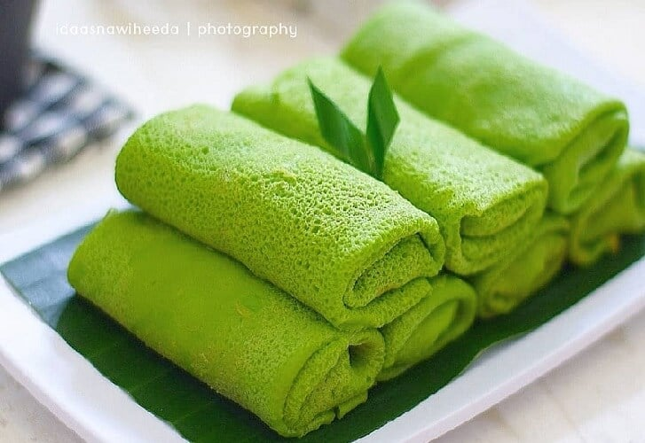

Contoh tampilan dadar gulung tradisional khas Indonesia.
Dadar gulung adalah makanan tradisional Indonesia berupa kue dadar tipis berwarna hijau yang digulung, biasanya diisi dengan kelapa parut dan gula merah yang manis. Kue ini populer sebagai jajanan pasar dan camilan di berbagai daerah Nusantara. :contentReference[oaicite:0]{index=0}
Kata “dadar” berarti dadar atau pancake, sedangkan “gulung” berarti digulung. Hidangan ini dikenal luas di Indonesia, bahkan juga populer di beberapa negara Asia Tenggara seperti Malaysia dan Singapura. :contentReference[oaicite:1]{index=1}
Kulit dadar yang lembut dibuat dari adonan tepung dan pandan lalu digoreng tipis seperti crepe. Setelah matang, kulit diisi dengan unti kelapa manis kemudian digulung hingga rapat. :contentReference[oaicite:2]{index=2}
Kombinasi warna hijau yang khas, aroma pandan, serta rasa manis legit dari isi kelapa dan gula merah membuat dadar gulung menjadi jajanan favorit lintas generasi. :contentReference[oaicite:3]{index=3}